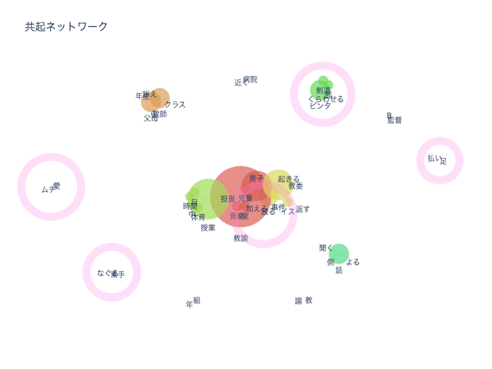
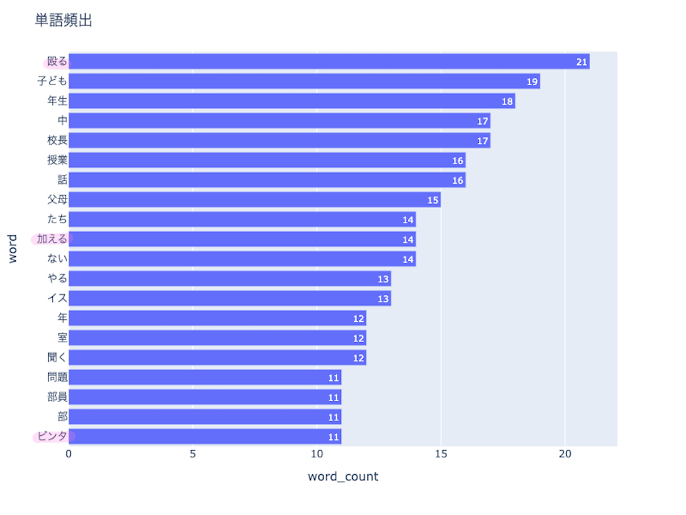
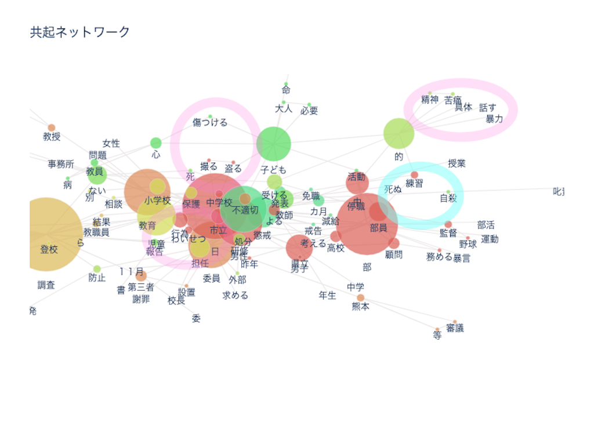
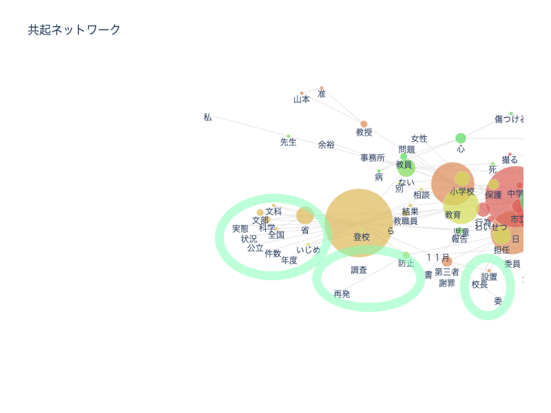
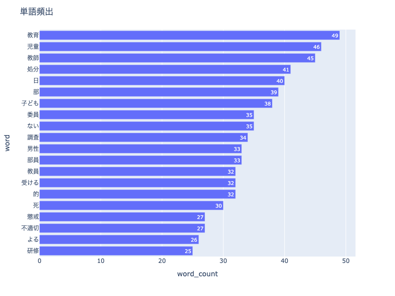

「学校 体罰」というワードに注目し、1984年以前と2020年以降の体罰の違いを比較した
~1984年以前の「学校 体罰」~
結果は以下のようになった


共起ネットワークでピンク色に囲まれている部分には、「ビンタ」「殴る」「加える」といった暴力的な言葉が見られる。
また、「愛のムチ」といった言葉も見ることができる。
これらのことから、当時の学校では教師が生徒に対して殴るなどの暴力行為を行なっていたことがわかる。
また「愛のムチ」という言葉からは、教師らは生徒に対する暴行を指導の一環として捉え、良いものだと思っていたあ傾向があったことがわかる。
~2020年以降の「学校 体罰」~


2020年以降の共起ネットワークでは三つの特徴を見つけることができた。
一つ目はピンク色のグループである。これらには「精神」「苦痛」や「盗撮」「わいせつ行為」などのワードを見つけることができる。これらのことから、直接的な暴力ではなく間接的・精神的な苦痛が体罰として捉えられていることがわかる。
二つ目は水色のグループである。このグループでは「自殺」「死ぬ」というワードが見られる。ピンク色のグループのような精神的な苦痛により、自ら命を経ってしまう若者が多いことが影響しているのだと考えられる。
三つ目は緑色のグループである。これらでは「委員」「再発防止」や「調査」「文科省」などのワードを見つけることができる。体罰を深刻な問題とし、再発防止委員の設置や文科省が体罰の実態をネットで公開するなど、体罰に対して徹底的な対策を行なっていることがわかる。
考察
~1984年以前と2020年以降を比較してわかったこと~
一番大きな違いは体罰という言葉の定義であると考える。1984年以前はビンタや殴るなどの直接的な暴行を体罰とし、2020年以降では盗撮やわいせつ行為などの精神的な苦痛も体罰としている。以下の画像は2020年以降の単語頻出である。1984年以降の単語頻出と比べてみると殴るなどのワードが入っていないことも、体罰とされる定義の違いが現れているのだと思う。これには近年のスマートフォンの発達やネットの普及によって、以前とは違う形での暴行（盗撮やわいせつ行為、ネットでの写真の流出やデマの拡散など）が可能になってしまったことが原因であると考えられる。

また、以前では体罰は愛のムチとして教師が学生に行う教育の一環という認識が今よりもあったと考えられる。2020年以降では再発防止委員会が設けられるなど、体罰は絶対的に許されないものとして扱われている点が大きな違いだとわかる。
その理由として、体罰によって精神的苦痛を負い自ら命を断ってしまう若者が増えたことが影響していると考えられる。死をより身近なもので、手軽に命を手放してしまう現代の傾向があることが現代の日本の課題であると考えられる。
~まとめ~
最近ではネットの発達に比例して体罰やいじめの形態が変わりつつあることがわかる。
そのため、これからも様々なことが変化していくことで新たな体罰やいじめが発生していくことが予測される。そういったことがわ若者たちの命を守るためにどういったことができるのか、今から考えて対策を練っていくことが必要となると考える。